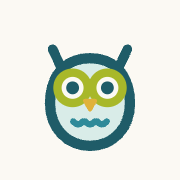

{{ title }}
This app is made for your phone. Scan this code with your phone’s camera to open it there, you’ll then be prompted to add it to your home screen.
welearnwegrow.github.io/5habittracker
Or type this address into your phone’s browser.
Did you know?
Adding a web page to your home screen makes it work like an app. One tap opens it full screen, with no browser bars.
5 Habit Tracker isn’t in an app store, which avoids store fees and helps keep it free.
Do this before choosing your habits. On iPhone, the home screen version keeps its own copy, so habits entered here in the browser won’t carry over.
You’re already using it from your home screen. You’re all set.
{{ stepsTitle }}
{{ s.n }}

{{ s.pre }}{{ s.key }}{{ s.post }}
{{ s.note }}